Altbautaugliche Verfahren und
Baustoffe
Altbautaugliche Verfahren und
Baustoffe
Und auch die Berliner Zwingburgen betoniertester Technik und fortschrittlichster Flachdachsysteme auf unser aller explodierender Baukosten ließen sich nicht gerade allzulange lumpen, bis sie zu wahren Tropfsteinhöhlen mutierten und unsere doofen Abgeordneten mit chinesischer Waterboerding-Technik für Selbstversuche beglückten:

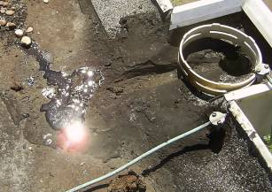
So sieht es nach zig vergeblichen Versuchen auf den abgesoffenen Flachdächern einer gerade in unseren Breiten brutalstblödsinnigsten "Architektursprache", die gerade unsere öffentlichen Bauherren auch heute noch vor sich hinstammeln, aus: Nach Freilegung und langwierigster Suche nach dem Loch, dem Riß, der brüchigen Stelle, genügt ein Tritt ins sumpfige Gelände, und die scheußlichste Brühe tropft oberflächig heraus - und zwar bestimmt nicht in den Ablauf. Bei diesem Foto aus einem meiner Beratungsfälle spiegelt sich dann die Sonne, die bekanntermaßen auch heute noch alles an den Tag bringt, in der aus dem Dach gelaufenen Lache. Wie es darunter aussieht, kann sich jeder selbst ausmalen. Alleine schon das zusätzliche Gewicht aus dem Wasser, für das die brüchig-selbstzersprengte Stahlbeton-Dachkonstruktion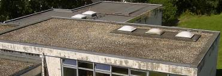
bestimmt nicht ausgelegt war ...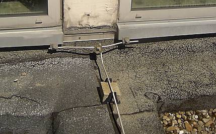
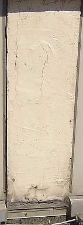
Hier fliegt einem der ans Flachdach anschließende Stahlbetonpfeiler wg. Betonschaden/Karbonatisierung/Rostsprengung um die Ohren. Wie lange das alles noch halten mag - alle diese Bildchen zeigen eine ca. 5-jährige Dach- und Betonsanierung - veranlaßt durch ein öffentliches Bauamt einer deutschen Landeshauptstadt? Und wie dann im Falle eines Falles? Uhu hilft da nix. Entweder durch Umwandlung in ein Gefälle- oder Steildach, oder irgendwie gem. Bestand. Möglichst alle (paar) Jahre wieder, die beliebte Jobmaschine für die Baubranche?: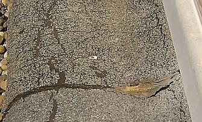
Wie immer hakt die Industrie da ein und puscht naßverliebte Dämmstoffe und bald allzuspröde Dichtrißbahnen aufs Sanierdach in abenteuerlichsten Materialkombinationen der Fugen-, Dicht- und Bahnmaterialien, daß die Augen tränen. Versprechungen ohne Ende rund um die dauerdichte Flachdachbahn, kennen wir das noch nicht? Willige Planer setzen irgendeinen Krempel dann um, die Planung dazu gibts umsonst vom Produzenten, bezahlen tut aber der Bauherr. Wieder und immer wieder. Schöööön. Flachdachhoffnung und Werbungsgläubigkeit, aber auch sehr geschicktes Marketing ersetzen vielleicht (wieder mal?) den Verstand.Wie sieht es eigentlich mit folgenden, offensichtlich meist total uninteressanten Problemfeldern aus?
- Können nur punktweise verklebte Dampfsperren bei späteren Inspektionen und Sanierungen Notabdichtungsfunktionen übernehmen, wenn bei der kleinsten Beschädigung Wasser unter die Dampfsperre gelangt und dort unkontrolliert vagabundieren kann?
- Wie steht es mit dem kondensat- und regenbedingten Absaufen der Dämmstoffe in der irgendwann immer ober- und/oder unterseitig undicht werdenden Dachkonstruktion, hält das die Baukonstruktion statisch bzw. betreffend Korrosion und/oder Vermorschung aus?
- Können Wärmedämmungen aus Hartschäumen, die nach der Produktion einem Schwund unterliegen und deshalb bei der losen Verlegung Fugen aufweisen, Wärmebrücken vermeiden?
- Können die bei manchen in der Dachdämmung eingebauten Hartschäume herstellungstechnisch unvermeidlichen Schwundbewegungen nicht Kräfte auf die aufliegende Dachhaut übertragen, die eine beschleunigte Alterung und Leckage der Dachdichtungsbahnen begünstigen, unheimliche Lastaufnahme durch von unten eindringendes Kondensat und von oben einregnendes Wasser inklusive?
- Können Folien-Abdichtungsbahnen, die ohne bzw. unter Auflast lose verlegt werden und nur mechanisch punktuell bzw. mit Randverklemmung an der Attika und den Dachdurchdringung wie Kamine, Kanäle, Lüftungsaufbauten und Dachfenstern nur streifenförmig befestigt werden, bei thermisch unvermeidlichen Längenänderungen nicht überhöhte Bewegungen auf der Dachoberfläche in der Abdichtungsebene erleiden, die zu Spannungen führen und die Dachhaut im Zusammenspiel mit UV-Licht unvergleichlich schnell altern lassen - trotz UV-Stabilisierung?
- Können Folien-Abdichtungsbahnen aus PVC trotz unvermeidlicher Weichmacher-Ausgasung auf Dauer formstabil ohne Schrumpf und Schwund und Brüchigkeit bleiben?
- Können die metallischen Flachdach-Befestigungselemente (geschweige denn die Elemente aus Plastik) bzw. die Fixierungen der die Bahn durchdringenden Bauteile wie Antennenverschraubungen, Abläufe / Gully usw. sowie die vorgeschriebenen linearen Fixierungen der sonst auf Wanderschaft gehenden Dämmstoffplatten den ungeheuren Angriff aus thermischer Bewegung, Bewitterung und sauren Reaktionsprodukten abgesoffener gestauchter oder (auch dank Frostangriff) aufgeplusterter Wärmedämmungen und den Bahnen selbst dauerhaft standhalten, ohne zu korrodieren?
- Können Dachprodukte, die in einer gegebenen Konstruktion mit Baustoffen bestimmter Rezepturen noch keine 30 Jahre umfangreiche Bewährung überstanden haben bzw. weit geringere Erfahrungswerte für sich reklamieren können, sinnvoll 30-Jahre-Versprechungen einhalten? Wie sieht es denn wirklich aus mit der Weichmacherfreisetzung und nachfolgender Versprödung im unerbittlichen Alterungsprozeß von Polymerprodukten?
- Können Dachbahnen mit erhöhter Empfindlichkeit gegen mechanische Beschädigungen den Gefährungen durch unsachgemäßes Begehen oder Arbeiten auf dem Dach dauerhaft trotzen?
- Können kleinformatige und lose aufgelegte /ausgelegte Dämmplatten / Wärmedämmelemente mit geradezu abenteuerlicher Wärmedehnfähigkeit die angreifenden Kräfte aus Temperatur, Wind und Begehung dauerstabil aushalten und unverrückt am selben Orte bleiben, ohne die Bahn darüber mitzunehmen (Dämmstoffwanderung) und durch unvermeidliche Bewegung überbelasten?
- Können alterungs- und spannungsbedingt gerade zur Winterzeit besonders rißempfindliche Dachfolien/Dichtungsbahnen bei großen Rißereignissen gut notgedichtet und überrepariert werden?
- Wie steht es um die zwangsläufige Seen- und Eisbildung im falsch mit nicht formstabilen Schäumen und Gespinsten gedämmten und falsch gebauten und deswegen mittig regelmäßig nach einiger Zeit einbeulenden Flachdach, wenn der Gully dann auf stützen- und randnahen Hochpunkten liegt? Hält die Statik? Überstehen die Dachhaut und ihre komplizierten Bauteilanschlüsse die damit verbundene Materialdehnung ewig aus? Ist schon die Zwangsabsaugung der Dachseewässser inkl. heiztechnischer Abschmelzung der winterlich dort anwachsenden Packeispackete installiert? Wird das alles gut halten, wenn es neben der regelmäßig trotz unter- und oberseitiger Folienverpackung absaufenden Dämmstoffpakete zu weiterer Lasterhöhung mittels Schnee und Eis kommt?
-Wie wirkt die oft unsichtbar abgesoffene und verschimmelte Dämmstoffebene auf die Sicherheit der tragenden Dachbauteile aus Holz und Metall?
- Können brennbare Dämmstoffe wegen ihrem hohen Brandlastpotential nicht auf stark personenfrequentierten Bauwerken im Brandfall erhöhte Rauchentwicklung und toxische Gase freisetzen, die die Brandbekämpfung erschweren, die Flüchtenden und die Feuerwehr mit schwersten Gesundheitsschäden mit Todesfolge sowie das Betonbauwerk gegebenenfalls mit Chloridverseuchung bedrohen?
- Können beim brandbedingten Erwärmen oder Verschwelen von brennbaren Dämmstoffen explosive Gase austreten, die sich unter der Dachhaut bei einem Schwelbrand sammeln und zu explosionsartigen Verpuffungen führen und die Brandbekämpfung entsprechend erschweren?
- Ach so, fast wieder mal vergessen: Wie steht es mit der
statischen Sicherheit der gesamten Flachdachkonstruktion gegen Einsturz
bei Baustellen-, Wind-, Kondensat-, Regen-, und Schneeereignissen?
(Dokumentation der abschreckendsten Beispiele der letzten Jahre rund um
Bad Reichenhall hier, was speziell die Betonbauten betrifft, auch hier)
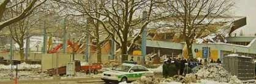
Der bayer. Ministerpräsident Stoiber und der Bundespräsident Köhler besichtigen am 7.1.2006 das eingestürzte Flachdach der Eissporthalle in Bad Reichenhall, man holte 15 Tote drunter raus und 34 schwer Verletzte. Ehre ihrem Angedenken, Schande über die Verantwortlichen. Foto: Konrad Fischer- Wie steht es alo mit den Faktoren Langzeiterfahrung, Wirtschaftlichkeit auf Dauer, Unterlaufsicherheit, Leckageortung und -meldung, thermische Längenänderung, Rißempfindlichkeit, Reparaturfreundlichkeit, Einsturz- und Brandsicherheit usw. als entscheidende Planungsgrundlagen neben dem aktuellen Preis?
Da sind wir mal gespannt. Und bevorzugen aus Qualitätssicherungsgründen Konstruktionysteme, die hier überzeugende Antworten geben. Welche? Ja, das ist eben objektabhängig und bedarf genauerer Planung. Flach mit Echtzeit-Leckmeldesystem, Gefälle mit dauerstabiler Deckung, Steilkonstruktion mit erhöhter Schneelast- und Regensicherheit? Alles ist möglich, sagt der Japaner.
Die hier angesprochenen Ursachen der überall auftretenden Flachdachprobleme wollen wir nun im Sinne eines Nachhilfeunterrichts für Bauherren und Planer etwas ausgiebiger illustrieren. Es folgt ein lecker Potpourri / Kaleidoskop der typischen Flachdachschäden durch Leckagen, Risse und Ablösungen der Dachbahnen aus Bitumen und Flachdach-Folien, Absaufen und feuchtebedingte Zerstörung der nässeempfindlichen Wärmedämmungen aus beispielsweise Mineralwolle / Mineralfaser / Glaswolle / Extrudiertes oder Expandiertes Polystyrol (XPS, EPS), Polyurethan PUR etc. darunter sowie Versagen der angeblichen Dampfsperren / Dampfsperrbahnen / Dampfsperr-Folien - aus dem ganz alltäglichen Wahnsinn auf den modernen Flachdach-Konstruktionen. Die Fotos aus dem Flachdachsumpf kommentieren sich wie von selbst:
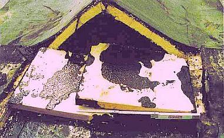
Die Temperaturdehnzahl der Dämmstoffe aus Polyurethan PUR ist extrem - ca. 6-8 mm/m bei 100 K! Bei entsprechenden Dachflächen wirkt sich das beispielsweise - hier nach nur drei Jahren - so aus: Das Flachdach wird partiell zum Steildach - es nützt ihm aber nix!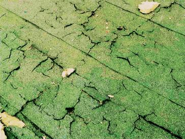
Die typischen Dämmstoffe - hier durch Feuchteaufnahme aufgequollene Mineralsfaserplatten - können Wärme nicht wegspeichern und verhindern deswegen den Abtransport der irren Hitze auf dem Dach in den massiven Unterbau. Daraus folgt eine gigantische thermische Belastung der Dachhaut, die das keinesfalls aushält. Es bilden sich Risse, Regen kommt rein, der Dämmstoff quillt - und weiter geht der Schaden.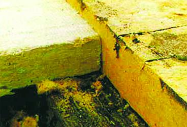
So kann es einer Mineralfaserdämmung / Mineralwolle-Dämmplatte durch Wasseraufnahme und Dampfbelastung ergehen. Der Vergleich zu einer neuen Platte zeigt die Volumenvergrößerung. Fürs Dach und die Stabilität seiner Dachbahn ist das schön blöd. So eine Dämmstofflage aus Mineralwolle / Mineralfaser kann irre Wassermengen aufnehmen. Das freut auch den Schimmelpilz.
So eine Dämmstofflage aus Mineralwolle / Mineralfaser kann irre Wassermengen aufnehmen. Das freut auch den Schimmelpilz. Wenn das Wasser in den Kuhlen auf der Dachhaut Gräben bildet, die dann durch die Spannung zu Leckagen / Rissen führen, dringt Wasser in die Mineralwolledämmung darunter. Das Gewicht des Wassers in dem ungewollten Gerinne der Dachhaut drückt dann die durchfeuchtete Dämmung immer weiter ein. Und der folgende Winterfrost tut das Seine, um die Materialstabilität immer weiter zu verringern.
Wenn das Wasser in den Kuhlen auf der Dachhaut Gräben bildet, die dann durch die Spannung zu Leckagen / Rissen führen, dringt Wasser in die Mineralwolledämmung darunter. Das Gewicht des Wassers in dem ungewollten Gerinne der Dachhaut drückt dann die durchfeuchtete Dämmung immer weiter ein. Und der folgende Winterfrost tut das Seine, um die Materialstabilität immer weiter zu verringern.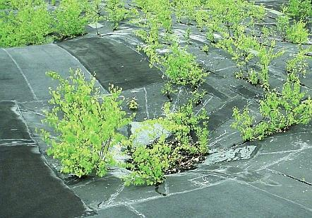
In der Flachdachkunst war und ist schon seit altersher das "Green Building" der ökologischen Architektur angesagt, hier können die Vöglein auf den Wald verzichten und in den Bäumen des Daches ihre feinen Nestlein bauen. Ob das alles schwedische Birke ist? In den Wassertümpeln Karpfen und Schleien? Enten und Gänse? Wasserschlangen, Krokodile und Nilpferde? Eisbären? So unwirtlich ist es also doch gar nicht auf deutschen Flachdächern der Moderne!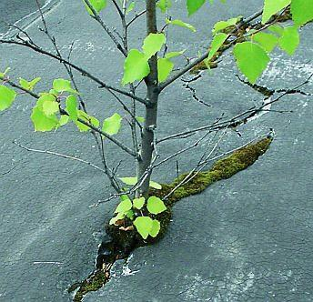
Ja, es ist gewißlich wahr: Die Wüste lebt!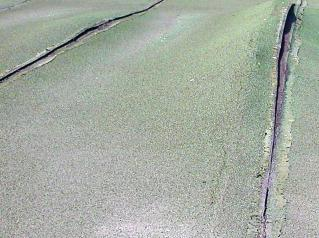
Der Anfang einer großen Freundschaft zwischen Dach und Baum: Der aufgehende Riß in der Dachhaut über einer feuchtespeichernden Wärmedämmung als geradezu perfektes Nährsubstrat für den Flachdach-Dschungel. Kolibris und Affen, freut euch über euer neues Zuhause, wenn euere bisherigen Heimstätten endlich alle abgeholzt sind.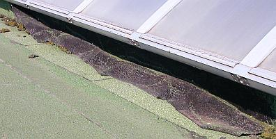
So ein Bitumenbahn-Anschluß an aufgehende Kanten ist auch ein vermaledeites Ding. Hält nicht allzulange.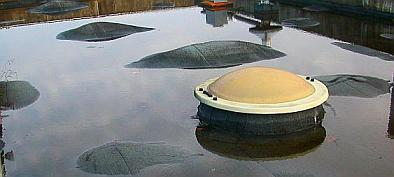
Wer sich mit Flachdachtümpeln nicht begnügen will, kann es auch mit einem tiefgründigen Ozean probieren. Nein, es ist kein U-Boot, was da aus dem Meere lugt - nur ein Oberlichtlein. Und es sind keine Walfischrücken, sondern Flachdachbahn-Blasen, die da eine Walherde simulieren.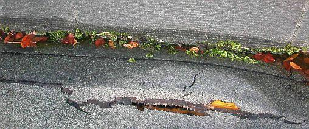
An Ecken, Kanten und Aufkantungen bilden sich große Spannungen in der Dachfläche. Die reißen freilich - über kurz oder lang! Darunter bestes Sumpfgelände. Übrigens: PVC-Flachdachbahnen gasen Weichmacher aus, die Polystyrol-Dämmung beschleunig in Wechselwirkung die Weichmacherwanderung, die Bahn zersetzt sich und schrumpft. Der Schrumpf wirft Sorgen-Falten und gibt Risse an den Bahn-Anschlüssen und Abschlüssen! Schnell ist der Zug dort abgefahren.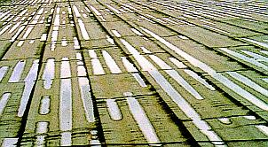
Zum Durchführen einer Segelregatta sind diese Gerinne in der zusammengesunkenen nassen Dämmunterlage noch nicht geeignet, aber der Deutschland-Achter könnte demnächst wohl einsetzen. Vorsicht: Aquaplaning (Flachdachplanung)! (Bildzitat aus: Dr.-Ing. G. R. Klose, Deutsche Rockwool-GmbH, in: Der Dachdeckermeister 6/93: "Steinwolle-Dämmstoffe auf Stahlleichtdächern")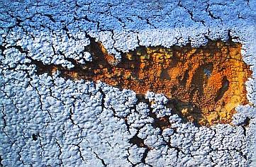
Eine aufgerissene Polyurethandämmung glotzt dich an. Krümelbröckelig, wa?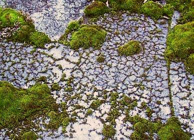
Nein, das ist nicht das Dachauer Moos, obwohl auch dort die Flachdächer bemoosen. Und wenn man erst unter die aufgerissene Flachdachbahn guckt! Ob es dort Moorleichen gibt?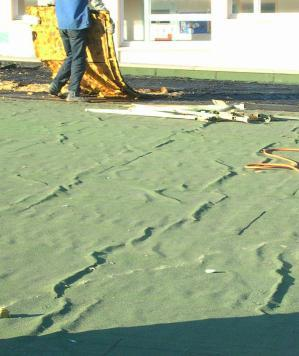
Schlangengleich schlängelt sich die Dachbahn über dem durchnäßten Mineralwolldämmstoff. Ja freilich, auch Risslein gibt es dort zuhauf. Sonst hätt' mer den nassen Plunder doch noch zwanzig Jahre liegengelassen.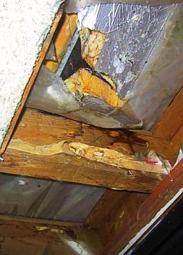
Nicht nur im nassen Dämmstoff schimmelt es herum, nein auch die Unterkonstruktion aus Holz bietet dem Naßfäulepilz beste Lebensbedingungen.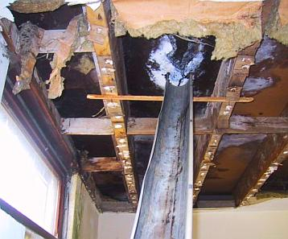
Hier ist es mit Eimern unter den Flachdachleckagen nicht mehr getan. Da muß eine fachmännische Rinnenanlage her!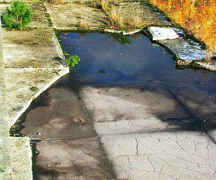
Ein idyllisches Biotop aus Rissen in der Flachdachbahn, Dämmstoffmatsch, Tümpel, Gräslein und Sträuchlein. Ob das eine CO2-Senke ist? Toll: Moderne Bio-Architektur!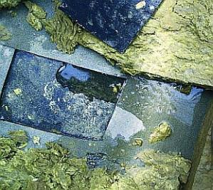
Es macht Pfschscht, Pfschscht beim Weg über so ein Mineralfaser-Moor. Gummistiefel empfohlen.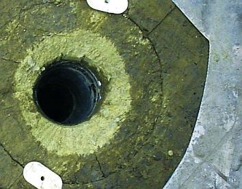
Der Mineralfaser-Dämmstoff im Nahbereich um den Abfluß ist fast trocken! Ob das als Erfolgsmeldung durchgeht?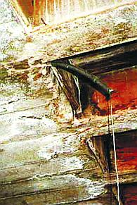
Die nassen Flachdächer sind net nur für Holzkonstruktionen der Tod. Auch Stahlbetondecken müssen erbärmlich leiden: Korrosion und Aussinterung in Folge des eindringenden Regenwassers. Demnächst als Tropfsteinhöhle mit in allerlei bunten Farben erblühenden Stalaktiten zu besichtigen.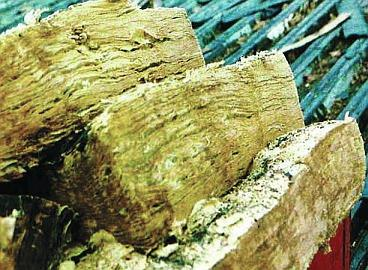
Aufgeplusterte Mineralwolle-Dämmplatten vom abgesoffenen Flachdach. Als Blätterteig recyclebar? Wie hieß es doch immer so schön?: Mineralfaserdämmplatten schrumpfen und quellen nicht!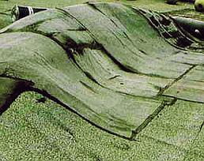
Was mag wohl für ein mächtig Ungetüm unter dem Flachdachbahn-Falten-Gebirge sein Unwesen im Dämmstoffsumpf treiben? Soviel zum Wert von Dampfbremsen. Von dort oben ist die Aussicht übrigens noch besser, als vom gerissenen Dachrand.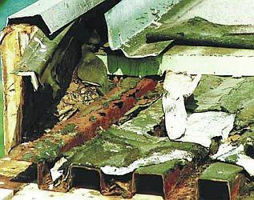
Wenn der Dämmstoff naß wird, wird alles naß. Und auch Blechprofiltafeln können rosten. Es sind schon recht aggressive Wässerlein, die im Flachdachsumpf vor sich hin gären und brodeln.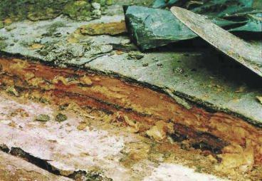
Alles Rott in der Mineralfaser unter der Bitumenbahn (zweilagig nach DIN).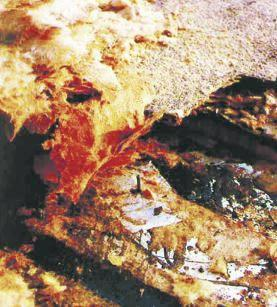
Kein Pic-Asso, sondern die Arschkarte für den Flachdachbesitzer: Dämmstoff naß, alles naß. Ein feuchtestabiler Dachaufbau hätte hier als Trumpf gestochen ...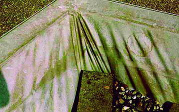
Chemiker haben mal eine Überraschungs-Schrumpf-Flachdachbahn entwickelt und in unfaßbaren Flächen auf die Flachdächer "empfohlen". Über die zugehörigen "Incentivs" für die verantwortlichen Planer wollen wir hier nicht reden. Jeder weiß doch, worum es geht. Das expandierte Polystyrol EPS kann durch Nachschrumpfen in Richtung Dachmitte die Kunststoffhat mitziehen, da gibt es freilich Risse, ebenso wie durch das Entpolymerisieren der PVC-Dachbahn dank ausgasendem Weichmacher und folgende Versprödung. Das Dämmstoffwandern wird durch die lose Verlegung bestens begünstigt.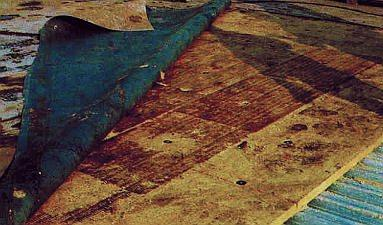
Vorhang auf: Die Götterdämmerung am Flachdachhimmel (keine gerösteten Dämmfilz-Kekse, sondern alles patschnaß!).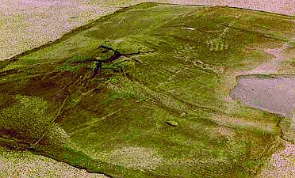
Kein Google-Earth-Bild vom abgetauten Kilimandscharo oder der Elfenbeinküste oder vom Vesuv am Golf von Neapel - der grün bealgte Vulkan ist eine Flachdachblase neben einem Flachdachsee (Bildmitte rechts). Grund: Die Schüsselung des Polyurethan-Dämmstoffs (PUR-Wärmedämmung).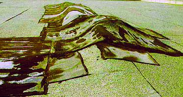
Hansaplast oder Tesastreifen hätten auf diesem Flachdachgebirgszug wohl den selben nixnutzigen Effekt ausgelöst. Heute ist Mehrlagigkeit das Abdichtprinzip. Jedoch: Die vielerlei Werkstoffe der Bauchemie im Flachdachbahn-Bereich vertragen sich nur ungern oder gar nicht. Thermoplastische und elastomere Kunststoffe, Klebstoffe, Bitumenbahnen, Polymer-Bitumen, hochpolymerisierte Bahnen, Flüssigkunststoffe usw.usf, - das gibt dem Dachspezl unslösbare Rätsel auf. Macht aber nix, der Schaden kommt oft genug erst nach der Gewährleistungsfrist durch die Bahn. Da winkt schon ein neuer Auftrag - mit wieder einem verbesserten und endlich, endlich im In- und Ausland als dauerdicht bewährten neuen Chemiekampfstoff.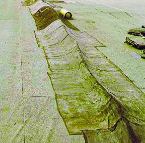
Ja, Flachdachkonstruktionen sind immer eine Gratwanderung, bei der unzureichend ausbalancierten Konzepten schnell der Absturz ins Bodenlose droht ...Es sollten nur Bahnen verwendet werden, die entsprechend dauerhaft und hinreichend detailliert offen gekennzeichnet und beschrieben sind. Auch dies sollte fester Bestandteil der Ausschreibung sein. ...

Abbildung: Wurmbefall / Insektenbefall / Fraßschäden im "normalen" Polystyrol XPS unter der Dachhaut!

Abbildung: Wurmbefall / Insektenbefall auch im expandierten Polystyrol XPS unter der Dachhaut! Was mögen das nur für Viecherlein sein, die einen solchen Fraß reinstopfen. Wunder der Schöpfung!
Tips und Tricks zur Flachdachinspektion und Instandsetzung
So nebenbei können auch wir Deutsche das hier nicht abhandeln, wenn wir gerne mit stolzgeschwellter Brust unsere langzeitbewährten Taten betrachten und vom Bauherrn gerne auch nach vielen Jahren noch mal nen Kaffee spendiert bekommen wollen. Wobei es heutzutage auch Bauherrn gibt, mit denen man nicht mal mehr das möchte, doch das ist eine andere Geschichte ...
1: Einführung 2: Moderne Dachkonstruktion 3: Schiefer + Tonziegel 4: Betondachstein 5: Ziegelnovitäten 6: Blechdach 7: Flachdach 8: Dachausbau 9: Reet/Stroh + Holzschindel / Links